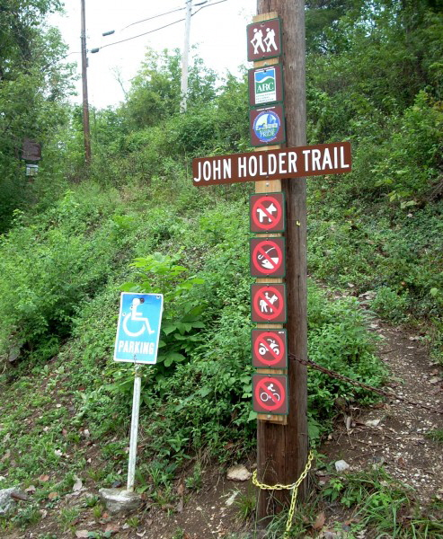

Plan your visit to Lower Howard’s Creek
LHC is open year-round! We’re conveniently located 15 minutes from Lexington.
Hours: LHC is open every Tuesday and Thursday from 9 a.m. to 1 p.m. and the first and third Saturday of every month.
The John Holder Trail is the only trail open to the public for foot traffic. The trailhead is located to the right of Hall’s on the River at 1225 Athens Boonesboro Road, Winchester, KY.
Please stay on established trails. This is the best way to stay safe and protect our natural resources.
The following are prohibited in the Preserve:
- Horses
- Dogs
- Motorized vehicles
- Rock climbing and repelling
- Biking
- Hunting, fishing, and trapping
- Collecting plants, rocks, artifacts, etc.
- Audio equipment, including Bluetooth speakers
- Camping, picnicking, or building fires
- Possession of alcohol or drugs
Please check the weather before you arrive and plan accordingly for hot, cold, or inclement conditions
Check out our Fall 2024 Hiking Schedule
Please practice the Leave No Trace principles when you visit any natural place.